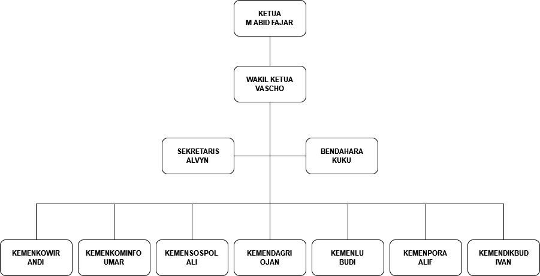

Fungsi dari Badan Eksekutif Mahasiswa

ASPIRATIF
Badan Eksekutif Mahasiswa berperan sebagai penampung serta penyalur aspirasi dan keinginan para mahasiswa.

ADVOKASI
Sebagai Badan Eksekutif Mahasiswa, mereka harus siap membantu jika terdapat mahasiswa yang mempunyai permasalahan mengenai pembayaran SPP atau penangguhan, permasalahan akademik, transparasi pendanaan kemahasiswaan, serta berperan dalam memperjuangkan hak hak mahasiswa.

KOORDINASI
BEM berfungsi untuk menjadi tempat berkoordinasi dan berkomunikasi berbagai kepentingan UKM serta menjadi jembatan antara aspirasi mahasiswa dengan pihak REKTORAT.

FASILITATOR
Sedangkan tugas dan kegiatan dari Badan Eksekutif Mahasiswa ini sangat banyak. Salah satunya yang sangat familiar ialah Orientasi Studi dan Pengenalan Kampus yang sudah kalian lalui sebelumnya.
Struktur Organisasi Badan Eksekutif Mahasiswa

Kegiatan Penyakit Tidak Menular (PTM) yang rutin di lakukan oleh BEM di wilayah dekat kampus
Kegiatan ini merupakan program kerja Mensossadkesma 3 bulanan, jadi setiap 3 bulan sekali BEM melakukan bakti sosial keliling
Pelatihan BEM UHAMKA 2016-2017 "Membentuk Karakter legislator muda yang berintegritas"